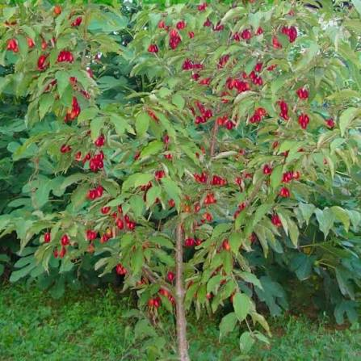
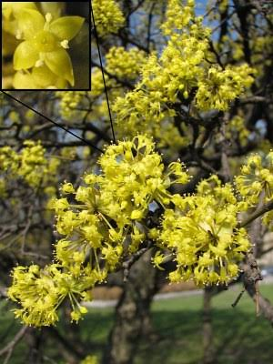
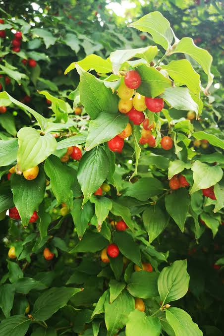
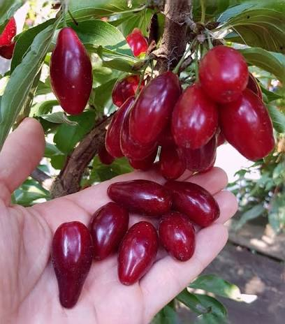
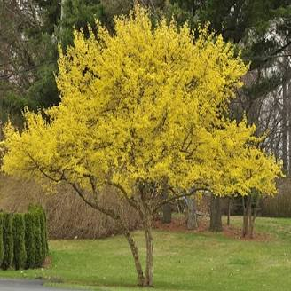

Dereń
Dereń jadalny Cornus mas to gatunek bardzo stary, znany już w starożytności. W Polsce również popularny swego czasu, sadzony najczęściej przy klasztorach i dworach, zapomniany po II wojnie światowej. Popularny w tradycji ludowej oraz kuchni regionalnej, gdzie jego owoce ceniono za charakterystyczny smak i szerokie zastosowanie przetwórcze. Spotkać można go zarówno w starych przydomowych ogrodach jak i parkach. Obecnie wraca do łask w dobie zdrowej i ekologicznej żywności, zresztą jak wiele innych gatunków. Dereń jest stosunkowo łatwy do uprawy. Poszukiwacze zdrowych i bogatych w składniki mineralne surowców, odnajdą wśród wielu odmian dereni jadalnych coś dla siebie. Dereń jadalny jest rośliną długowieczną, łatwą w uprawie, może liczyć po 100, 200, a nawet więcej lat i co ciekawe wciąż obficie owocować. Jako gatunek długowieczny dereń może owocować przez wiele lat, tworząc stabilny element ogrodu lub większych nasadzeń. Dereń rośnie jako duży krzew (3-5m) lub małe drzewko o kulisto-rozłożystej koronie. Dzięki takiemu pokrojowi dereń jadalny świetnie sprawdza się jako soliter, w grupach krzewów lub w nasadzeniach szpalerowych. Ta niezwykle mało wymagająca roślina jest jedną z pierwszych kwitnących roślin w środowisku. Już nawet w lutym pojawiają się żółte kwiaty, które są pierwszym pokarmem dla pszczół. Kwitnie bardzo wcześnie, jeszcze zanim pojawią się liście, a jego kwiaty są miododajne i chętnie odwiedzane przez owady. Szczyt kwitnienia przypada na marzec, w niektórych rejonach przeciąga się do kwietnia (w zależności od pogody).
Owoce derenia jadalnego - zastosowanie
Wszystkie odmiany derenia jadalnego również te z siewu mimo różnej pory dojrzewania owoców, kwitną w tym samym czasie, co oznacza, że wszystkie mogą być dla siebie nawzajem zapylaczem. W zależności od odmiany i warunków owoce dojrzewają od połowy sierpnia do połowy września. Owoce dojrzewają stopniowo, najczęściej od połowy sierpnia do końca września, co ułatwia planowanie zbiorów. Owoce derenia to pestkowce, które mogą być małe lub wielkoowocowe. Wyróżniamy derenie żółte, derenie czerwone w różnych odcieniach po prawie czarne, są one niezwykle cenne pod względem składu. Najczęściej to czerwone owoce o podłużnym kształcie. Występują także owoce jasnoczerwone, ciemnoczerwone, a nawet niemal czarne, o owalnym lub kulistym kształcie i zwartym miąższu. Są soczyste, a smak ich jest kwaskowo-słodki z nutą cierpkości w zależności od proporcji kwasów do cukrów. Owocowe derenia jadalnego oczywiście można spożywać na surowo. Jednak najczęściej mocno kwaśny smak sprawia że nie jest to najlepszy wybór. Owoce derenia jadalnego można przerabiać na wiele sposobów m.in. konfitur (dżemy, marmolady), galaretki, kiszonki, soki lub dodawać do zakwaszania innych przetworów. Ponadto można wytwarzać z nich wina lub bardzo znaną i popularną wśród nalewek - nalewkę dereniówkę.
Dereń jadalny – uprawa w Polsce, najlepsze stanowisko
W związku z szerokim zakresem tolerancji derenia jadalnego (cornus mas) na warunki klimatyczno-glebowe, mógłby rosnąć w zasadzie wszędzie. Najlepsze jednak będą gleby żyzne, dodatkowym atutem będzie fakt, że gleba jest stale umiarkowanie wilgotna. Nie mniej jednak, aby owoce zdążyły dojrzeć i nie przemarzły warto odmianę derenia jadalnego dostosować pod kątem okresu dojrzewania do rejonu, w którym ma być sadzona. Te odmiany, które dojrzewają późno np. Florianka i Podolski należy sadzić poza terenami północno-wschodnimi oraz górami. Na tych terenach lepiej sprawdzą się odmiany wcześniej dojrzewające. Dereń jadalny dobrze radzi sobie na słabszych, uboższych ziemiach, znosi suszę i zanieczyszczenia powietrza. Zdecydowanie preferuje gleby wapienne (pH 7-7,5), choć i na kwaśniejszych będzie rósł. Jeśli jednak plonowanie ma być atrakcyjne to na pewno cornus mas „doceni” świetne warunki w formie żyznej i próchnicznej ziemi o umiarkowanej wilgotności. Nie wskazane są natomiast zastoiska mrozowe oraz podmokłe i zacienione miejsca, gdzie dereń jako światłolubna roślina nie będzie odpowiednio dorastał i owocował. Warto zastanowić się dobrze przed posadzeniem derenia nad docelowym miejscem, ponieważ nie lubi on przesadzania. W związku z płytko zagłębiającym się systemem korzeniowym po posadzeniu należy regularnie podlewać młode drzewko. Jest to w zasadzie jedyna wymagana przez niego forma pielęgnacji, ponieważ nie ma potrzeby opryskiwania, przycinania czy specjalnego nawożenia tego gatunku. Zamiast nawozów sztucznych (których dereń nie lubi) dobrze sprawdzi się ściółka z obornika, która jest źródłem cennej próchnicy i składników pokarmowych. Alternatywą dla obornika może być również ściółka z kompostu, która poprawia strukturę gleby i sprzyja utrzymaniu wilgoci.Ponadto stanowi barierę przed nadmiernym odparowywaniem wody z gleby oraz ogranicza rozwój chwastów. Rozstawa dla derenia wynosi 2,5-3 m w rzędzie oraz 4 m między rzędami. Na plantacjach dla maszyn należy zwiększyć rozstaw między rzędami do 5m.
Dereń jadalny - co jeszcze warto wiedzieć?
Odmiany derenia jadalnego różnią się między sobą kolorem owoców, porą dojrzewania i smakiem. Niektóre są odmianami uniwersalnymi inne nadają się tylko na przetwory. Słodycz smaku nie zależy od intensywności koloru skórki, a od stosunku ekstraktu do kwasowości. Im jest on wyższy tym owoce lepiej smakują w formie deserowej. Odmiany derenia jadalnego różnią się kolorem owoców, porą dojrzewania oraz smakiem. Owoce zawierają naturalnie występujące składniki, takie jak kwasy organiczne, pektyny oraz barwniki roślinne, które wpływają na smak, trwałość i zastosowanie owoców w przetwórstwie.
Dereń jadalny - rozmnażanie
Rozmnażanie derenia jadalnego odbywa się na kilka sposobów. Głównie przez wysiew nasion, choć jest to metoda pracochłonna, która kończy się fiaskiem przy najmniejszym błędzie na kolejnym etapie. Najtrudniej jest przy tej metodzie przerwać spoczynek bezwzględny nasion i doprowadzić do ich kiełkowania, ponieważ nasiona derenia mają grubą łupinę nasienną. Kolejną metodą jest rozmnażanie przez sadzonki zdrewniałe lub zielne. Jednak najbardziej wydajną metodą jest szczepienie, które gwarantuje powtarzalność cech matecznych i szybkie wejście w okres owocowania (nawet 2 -3 rok po posadzeniu). W porównaniu do derenia jadalnego rozmnażanego ze szczepienia ten uzyskany z siewu zaczyna owocować dopiero w 6-8 roku. Ponadto szczepiony dereń w przeciwieństwie do dzikich siewek ma większe i smaczniejsze owoce, a krzew/drzewko osiąga mniejsze rozmiary do 3-3,5 m wysokości i 2-3 m szerokości. Dzięki temu szczepione odmiany polskie derenia jadalnego są chętniej wybierane do uprawy ogrodowej i nasadzeń użytkowych.

Berberys kwaśnica
w formie żywopłota
Berberys pośredni
jako karzak
Berberys brodawkowaty
rosnący przy studni
Berberys zwyczajny
taki nie za wysoki
Berberys zimozielony
przygotowany na zimę